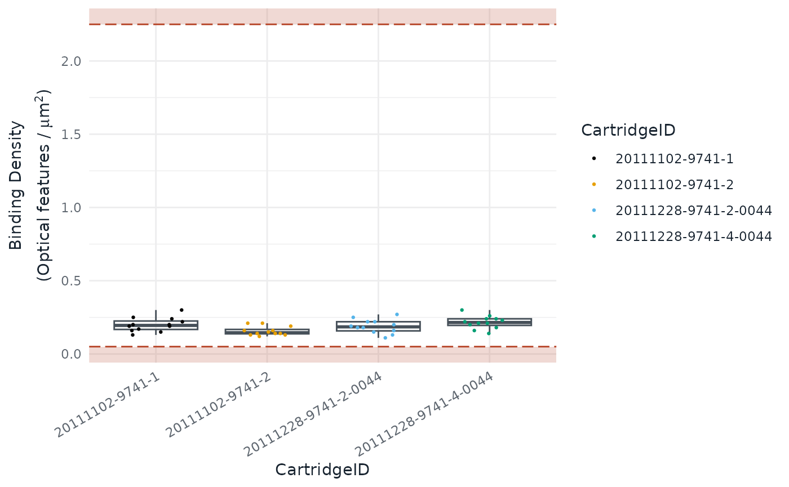

NACHO 3 stores a study in one nacho object, where NACHO
2 used a list with a long $nacho table. This article is for
you if you have NACHO 2 code, saved NACHO 2 objects, or a pipeline that
calls NACHO 2. It shows how to convert your objects, which calls change,
and which results change.
You do not have to move. NACHO 2.0.8 keeps working with the code you
have. If you stay, pin the version, for example with
renv::install("NACHO@2.0.8"). NACHO 3 needs R 4.3 or
newer.
Saved objects
A NACHO 2 object saved with saveRDS() does not work as a
NACHO 3 object. read_nacho() reads a saved file from any
NACHO version, and converts NACHO 2 objects on the way.
upgrade_nacho() converts an object that is already in your
R session.
old <- readRDS("nacho-2-object.rds")
nacho <- upgrade_nacho(old)
nacho <- read_nacho("nacho-2-object.rds")The conversion keeps the raw counts, the sample sheet, the settings
and the thresholds. It computes the quality-control metrics, the
normalised counts, the PCA and the outlier flags again, with the NACHO 3
definitions. It also moves the object to the legacy preset, with
background = "geo", background_mode = "subtract" when the
panel has negative probes, so the flags and the background correction
stay close to what NACHO 2 gave you. Housekeeping genes that NACHO 2
predicted are kept as fixed genes and are not predicted again, so the
geNorm change does not affect a converted object. The numbers can still
differ slightly, because of the changes listed in the section on
results. Only read files you trust, since readRDS() can run
code stored in a file.
read_nacho() also reads NACHO 3 objects, and
upgrade_nacho() returns a NACHO 3 object unchanged.
GSE74821 is already a NACHO 3 object, so this call changes
nothing.
identical(upgrade_nacho(GSE74821), GSE74821)
#> `x` is already a NACHO 3 object, so it is returned unchanged.
#> [1] TRUEFunction and object changes
The table gives the NACHO 3 call for each NACHO 2 call. Read
x as a nacho object.
| NACHO 2 | NACHO 3 |
|---|---|
x$nacho, the long table |
as.data.frame(x, long = TRUE). |
The Count column of
x$nacho
|
nacho_counts(x), a matrix with one row per
probe and one column per sample. |
The Count_Norm column of
x$nacho
|
nacho_counts(x, normalised = TRUE). |
The sample columns of x$nacho
|
nacho_samples(x), one row per sample. |
The probe columns of x$nacho
|
nacho_probes(x), one row per probe. |
Other elements, such as
x$housekeeping_genes and
x$normalisation_method
|
x@settings, for example
x@settings[["housekeeping_genes"]]. print(x)
gives a summary. |
x$outliers_thresholds |
nacho_thresholds() builds a set of limits,
and x@thresholds holds the ones in use. |
The is_outlier column of
x$nacho
|
nacho_qc(x)[["status"]], with one status
per metric, n_flags and reason beside it. |
check_outliers() |
Removed, since the status always follows the thresholds of the object. |
normalise(x, remove_outliers = TRUE) |
exclude_outliers(x). |
autoplot(x, x = "BD") |
autoplot(x, type = "BD"). |
render(x, output_file = , show_outliers = , clean = ) |
render(x, format, output_dir, title, author, group). |
visualise(x), which saved
nacho_object.rds in tempdir()
|
visualise(x) returns the tuned object, and
writes no file. |
deploy(), which defaulted to
/srv/shiny-server
|
deploy(directory = ), with no
default. |
NACHO 2 had no x$raw_counts and no
x$normalised_counts, although some old documentation said
so. The raw and normalised counts were the Count and
Count_Norm columns of x$nacho.
Counts and tables
nacho_counts() returns a matrix, so the long table is no
longer the way in. as.data.frame(x, long = TRUE) gives the
long layout back when you need it for ggplot2 or dplyr.
dim(nacho_counts(GSE74821))
#> [1] 72 48
dim(nacho_counts(GSE74821, normalised = TRUE))
#> [1] 72 48
dim(as.data.frame(GSE74821, long = TRUE))
#> [1] 3456 87In NACHO 2, x$nacho repeated the sample columns on every
probe row. In NACHO 3, nacho_samples() and
nacho_probes() keep them apart.
Outlier flags
nacho_qc() gives one row per sample. Each metric has its
own status column, and status, n_flags and
reason sum them up. The limits come from
nacho_thresholds(), and x keeps them, so there
is no check_outliers() to run.
head(nacho_qc(GSE74821)[, c("IDFILE", "status", "n_flags", "reason")], n = 3)
#> IDFILE status
#> 1 GSM1934697_20111102_20111102-9741-1_LGWU101986-1036378WU_02.RCC.gz pass
#> 2 GSM1934698_20111102_20111102-9741-1_LGWU102547-1036381WU_05.RCC.gz pass
#> 3 GSM1934699_20111102_20111102-9741-1_LGWU102569-1036382WU_06.RCC.gz pass
#> n_flags reason
#> 1 0 <NA>
#> 2 0 <NA>
#> 3 0 <NA>exclude_outliers() drops the flagged samples and
normalises the others again. normalise() has no
remove_outliers argument any more. When no sample is
flagged, exclude_outliers() says so and returns the
object.
nacho <- exclude_outliers(GSE74821)
#> No sample is flagged, so nothing is removed.
dim(nacho_counts(nacho))
#> [1] 72 48Plots
autoplot() takes the plot name in type.
NACHO 3 stops when you pass x, and the error says that
x was renamed type.
autoplot(GSE74821, type = "BD")
autoplot(GSE74821, x = "BD")Reports
render() writes a Quarto report, and the old arguments
are gone. output_file and clean have no
replacement: the file is nacho-report.html or
nacho-report.pdf in output_dir, and the
working files live in a temporary folder. show_outliers has
no replacement either. The report settings outliers_factor
and outliers_labels still change how flagged samples look.
The report needs the Quarto command-line interface 1.9.18 or newer. Use
format = "typst" for a PDF, which needs no LaTeX.
render() returns the path of the report.
path <- render(
GSE74821,
format = "html",
output_dir = "reports",
title = "Quality control of GSE74821",
author = "Jane Doe, Genomics Core"
)The first argument is now x, so change
render(nacho_object = ...) to render(x = ...)
or drop the name. title, author and
group are new. With group, which names a
column of nacho_samples(x), the report checks whether the
batches and the biological groups are confounded.
The app
visualise() opens the app and returns the tuned object
when you click Done. nacho_app() returns a
Shiny app object, and deploy() copies an app.R
that calls nacho_app() into
directory/app_name. deploy() no longer
defaults to /srv/shiny-server, so pass
directory. Read Explore quality
control in the app for a tour of the pages.
Results that change
The same data can give different numbers in NACHO 3. These changes come from corrections of the methods, not from the new class.
- The PCA is computed again with the NACHO 3 code, so the components can differ.
- Normalised counts are no longer rounded, and no longer floored at 0.1.
- There is no background correction by default, which is
background = "none". Choose a statistic withbackgroundand whether to threshold or subtract withbackground_mode. Subtracting floors the counts at 0. - Samples are flagged against the nSolver thresholds by default, where NACHO 2 used its own limits.
- Negative probes are excluded with Bruker’s rule, which drops at most two probes that are 3-fold above the others.
- The positive control linearity leaves out POS_F and adds 1 to every count in the nSolver preset.
-
Negative_factoris always the geometric mean of the kept negative controls, also withnormalisation_method = "GLM". NACHO 2 subtracted the model intercept, so GLM-normalised counts differ. The background applied sits in the newBackgroundcolumn. -
housekeeping_predict = TRUEpicks the five most stable genes by geNorm, among the genes above background in at least 90% of the samples. NACHO 2 picked the five genes with the smallest spread. - miRNA panels are no longer normalised with housekeeping genes by
default. Give
housekeeping_genes, or sethousekeeping_norm = TRUEorhousekeeping_predict = TRUE, to turn it back on. - Plots use the NACHO theme, and the shared labels use US spelling, such as “Normalized” and “Hemolysis”.
NACHO 2 outlier calls
The legacy preset keeps the NACHO 2 limits. With
background = "geo", background_mode = "subtract", it gives
back the NACHO 2 outlier calls. A converted object already has these
settings. For a NACHO 3 object, pass them to
normalise().
legacy <- normalise(
GSE74821,
outliers_thresholds = nacho_thresholds(preset = "legacy"),
background = "geo",
background_mode = "subtract"
)
#> Normalising again with new settings:
#> • background
#> • background_mode
#> • thresholds preset
table(nacho_qc(legacy)[["status"]])
#>
#> pass
#> 48For new data, pass the preset and the background to
load_rcc(), because its default is
background = "none". The limits of the preset are the
defaults NACHO 2 stored in x$outliers_thresholds.
load_rcc(data_directory, ssheet_csv, preset = "legacy", background = "geo", background_mode = "subtract")
str(nacho_thresholds(preset = "legacy"), max.level = 1)
#> List of 13
#> $ preset : chr "legacy"
#> $ instrument : chr "max"
#> $ BD : num [1:2] 0.1 2.25
#> $ FoV : num 75
#> $ PCL : num 0.95
#> $ LoD : num 2
#> $ Positive_factor : num [1:2] 0.25 4
#> $ House_factor : num [1:2] 0.0909 11
#> $ Housekeeping_detected: num 0
#> $ Ligation_order : num 0
#> $ Ligation_R2 : num 0
#> $ Ligation_NEG : num [1:2] -Inf Inf
#> $ Haemolysis : num [1:2] -Inf InfPipelines
Two nf-core
modules, nacho/qc and nacho/normalize,
which the nf-core/nanostring
pipeline uses, call NACHO 2 code. They read list elements such as
[["nacho"]], [["outliers_thresholds"]] and
[["housekeeping_genes"]], and call
autoplot(x = ) and
render(output_file = , show_outliers = ). In NACHO 3,
x[["..."]] fails with the error
S7 objects are not subsettable, and the two calls fail as
described above. The modules pin NACHO 2.0.7, so they keep working until
they update. This section was checked on 11 October 2026 against
nf-core/modules, whose nacho modules pin NACHO 2.0.7.
| Module call | NACHO 3 replacement |
|---|---|
[["nacho"]], with Count_Norm
pivoted to a wide table |
nacho_counts(x, normalised = TRUE). |
[["outliers_thresholds"]] and the PASS or
FAIL table the module builds by hand |
x@thresholds and the *_status
columns of nacho_qc(x). |
[["housekeeping_genes"]] |
x@settings[["housekeeping_genes"]]. |
autoplot(x, x = "BD") |
autoplot(x, type = "BD"). |
render(x, output_file = "report.html", show_outliers = TRUE) |
render(x, output_dir = "reports"), which
writes reports/nacho-report.html. |
The call to load_rcc() in the modules uses no preset or
background, so NACHO 3 gives it the nSolver preset with no background
correction. The numbers change even where the calls still run. To keep
the NACHO 2 results, pass
preset = "legacy", background = "geo", background_mode = "subtract",
as shown in the section on NACHO 2 outlier calls.
The nacho/qc module renders twice, to two file names. In
NACHO 3 both reports are called nacho-report.html, so the
second overwrites the first unless you give each call its own
output_dir. Rename or move the report in the next step of
the pipeline if it expects another file name.
Further reading
The changelog lists every breaking change by source file. Analyse a GEO study uses the NACHO 3 functions on a public study from start to finish.